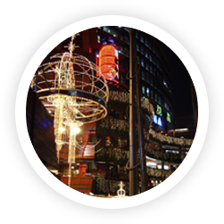
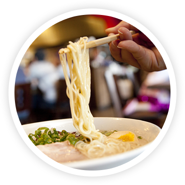
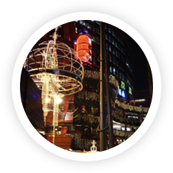
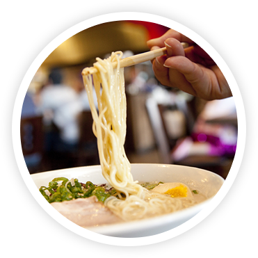

After onsen, enjoy delicious local dishes. Surrounded by both oceans and mountains, Kyushu has fresh vegetables, fruit, and seafood throughout the year. Among other kinds of fresh local products, Kyushu brand beef, pork, and chicken, which are painstakingly raised in nature, are what you must try when you are in Kyushu. You will be impressed by the quality of the meat, which can be enjoyed in any style, including grilled and stewed. Other local dishes that are created and nurtured by Kyushu’s distinctive climate and culture include ramen noodles, the most popular Kyushu dish, local-style “Nabe” hot pot, and sweets.
In Kyushu, you can enjoy shopping for the latest fashion items and sundry goods at shopping malls in the large cities, while you can enjoy traditional events, such as summer festivals and fireworks, as well as old castle towns and traditional crafts, in local areas. This makes Kyushu very unique, where you can enjoy new things and old things together without borders.
Let’s learn more about Kyushu and set off to enjoy Kyushu to the fullest!
 


